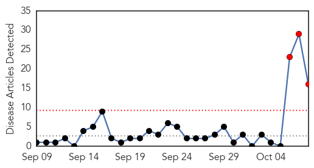

Hepatitis
30-Day Web Trend
3 alerts, 0 warnings

30-Day Twitter Trend
0 alerts, 0 warnings
Article Locations
Article Confidences
Top Articles:
- 0.943
- The Online Citizen
- 0.910
- The Online Citizen
- 0.857
- NJ patients tested for HIV after nurse reuses flu shot syringe
- 0.841
- Top SG Hospital Faces Crisis as More than 20 of Its Renal Patients Are Infected with Hepatitis C
- 0.826
- Unbelievable Breach In Safety Protocol During Flu Vaccine Administration, 67 Pharmaceutical Employees At Risk
- 0.821
- New Jersey nurse caught reusing flu shot syringes
- 0.819
- Did mass media suppress SGH Hepatitis infection news for PAP political expediency?
- 0.817
- MOH told of hepatitis C cluster at Singapore General Hospital in late August, Health News & Top Stories
- 0.810
- NJ health officials say nurse reused syringes while giving flu shots; testing urged
- 0.802
- 10 questions we still have for SGH
- 0.765
- Why you should NEVER get a flu shot: Nurse licensed by the New Jersey Board of Nursing uses same dirty syringe to vaccinate 70 people in a row... WOW
- 0.757
- WP questions ministry's delay in releasing information, news, Health News, AsiaOne YourHealth
- 0.695
- Welcome to the Singapore Democrats
- 0.639
- Nurse giving flu shots reused syringes
- 0.547
- Workers' Party seeks clarification from MOH after Hepatitis C cluster at SGH
- 0.529
- Officials: Nurse reuses syringe to administer flu shots for N.J. pharma company
Top Tweets:
-
No tweets found for Oct 08, 2015
Meningitis
30-Day Web Trend
0 alerts, 0 warnings

30-Day Twitter Trend
1 alerts, 0 warnings
Article Locations

Article Confidences

Top Articles:
Top Tweets:
-
No tweets found for Oct 08, 2015